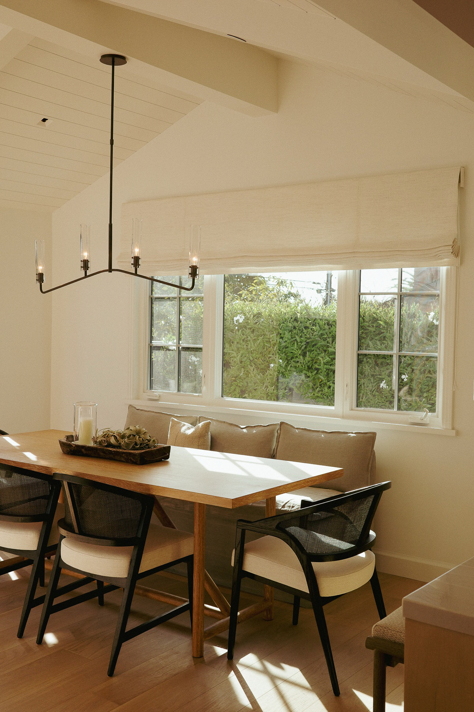
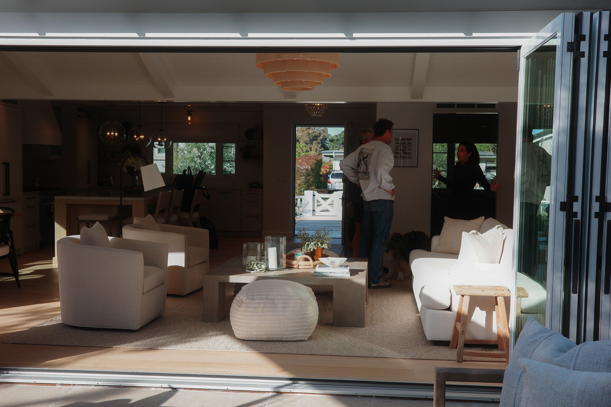
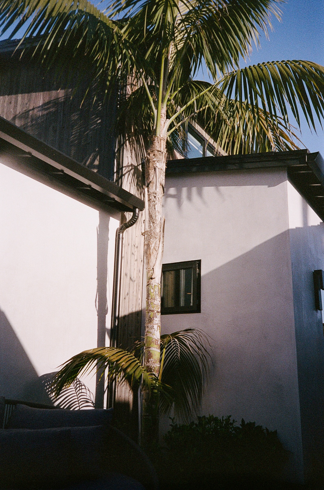
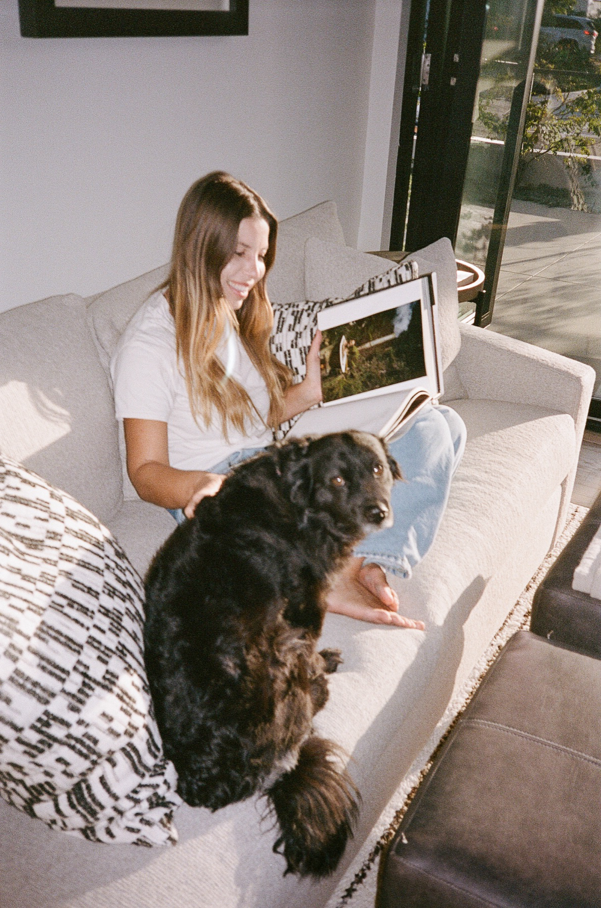
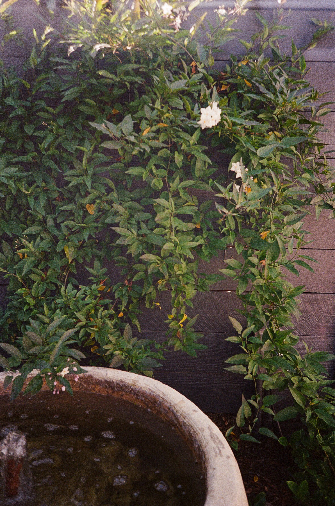
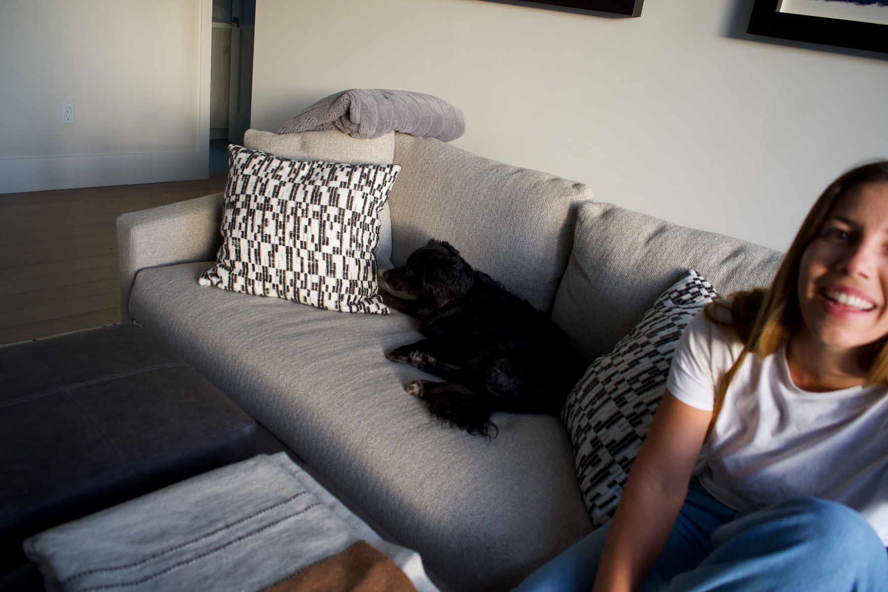
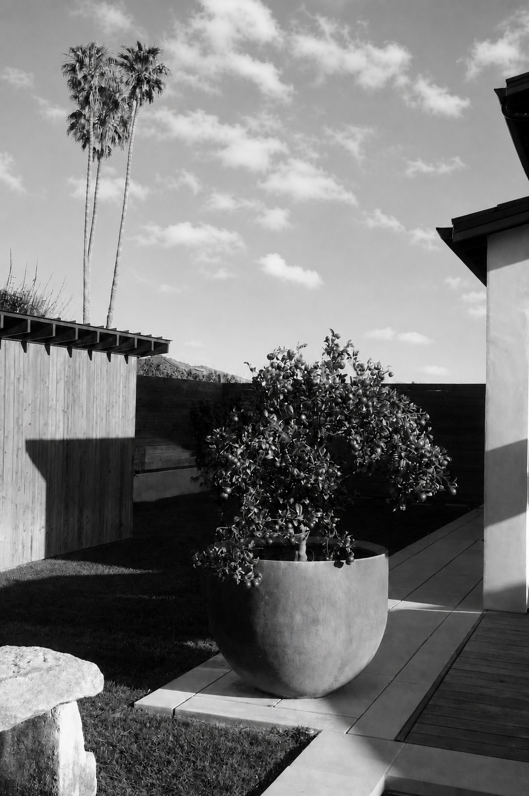

Full-Service Building
Nick Mason Construction Co. is a full-service construction firm specializing in custom residential and commercial building. Founded in 2016 by Nick Mason and a close group of friends and subcontractors, the company works hands-on from early planning through final detail.
Based between Santa Barbara and Los Angeles, the firm builds with a steady focus on craft, site, material, and the people who make the work possible.
Contact
Location
Santa Barbara, CA
Los Angeles, CA
Work in Progress